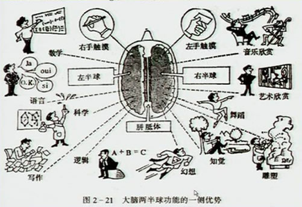

00:00
第三节 测验结果的解释
第一单元 中国韦氏成人智力量表的解释（WAIS-RC） |
第二单元 明尼苏达多项人格调查表的解释 |
第三单元 90项症状清单（SCL-90）的解释 |
第一单元 中国韦氏智力量表的解释（WAIS-RC）
一、学习目标
了解FIQ的波动范围和可信区间。
掌握VIQ和PIQ差异的意义。
掌握各分测验差异的意义及分析的基本方法。
00:59
二、工作程序
（一）.总智商（FIQ）的分析 :
用测得的IQ值加减5（85%～90%的可信限水平）的方法判断IQ值的波动范围。
如测得的IQ值为105时，被试的IQ值便在100～110的范围内变化。
（二）.分量表的平衡性分析：

1.优势半球有损害，则VIQ明显低于PIQ；
2.非优势半球有损害，则PIQ明显低于VIQ；
3.所谓明显降低：各年龄组相差到101Q便达到0.05水平；
4.韦克斯勒提出VIQ与PIQ的差异达15分时才有意义。
03:34
（三）.比较各分测验的差异
VIQ与PIQ差异显著时的意义
|
VIQ > PIQ |
PIQ > VIQ |
| 1.言语技能发展较操作技能好 |
1.操作技能发展较言语技能好 |
| 2.听觉加工发展模式较视觉加工模式好 |
2.视觉加工模式发展较听觉模式好 |
| 3.可能在完成实际行动或任务上有困难 |
3.可能有阅读障碍 |
| 4.可能操作能力差 |
4.可能有言语的缺陷 |
| 5.可能有运动性非言语技能缺陷 |
5.可能有听觉性概念形成技能缺陷 |
分测验与分量表比较剖析图
|
言语测验 |
量表分 |
操作测验 |
量表分 |
知识 |
14 |
数字符号 |
16-S |
领悟 |
5-W |
图画填充 |
6-W |
算术 |
18-S |
木块图 |
10 |
相似性 |
7-W |
图片排列 |
8-W |
数字广度 |
12 |
物体拼凑 |
16-S |
词汇 |
13 |
|
|
言语平均分为12，操作评分为11,全量表平均分为11。
07:16
三、相关知识：
（一）.智商不与因素分数相应：
（二）.言语能力对操作能力缺陷的补偿；
（三）.轮廓中得分的分散（V-P差异无意义）
（四）.再测效应（增分量：V3.5，P9.5)
四、注意事项：
（一）.从总智商开始解释并不意味着将总分提高到首要地位。
（二）.VIQ与PIQ的差异的意义是相对的。
一般情况下，正常人可相差9～10分，
其IQ高，VIQ>PIQ；IQ低，PIQ>VIQ。
IQ在80分以下时，PIQ>VIQ达11分以上。
（三）.比较各分测验的差异时，计算是按照年龄量表分进行的，而且是自身比较。
13:38
第二单元 明尼苏达多项人格调查表的解释
一、学习目标
掌握 MMPI 一般解释程序。
掌握 MMPI 效度量表的解释程序。
掌握 MMPI 临床量表的解释程序。
掌握 MMPI-2 内容量表的解释方法。
掌握 MMPI-2 附加量表的解释方法。
14:28
二、工作程序
(一)一般解释程序
同MMPI及MMPI-2的施测过程相比，测验结果的解释过程要更为复杂。
MMPI及MMPI-2一般的解释过程包括如下三个步骤：
1.首先要分析传统效度量表（？，L、F、K)的模式，以及MMPI-2新增加的效度量表的分数，从而判断受测者的测验态度。通过分析效度量表，一方面可以得出某受测者MMPI测验结果整体上无效的结论，或者该受测者测验的前半部分（399题或者370题以前）有效，而后半部分无效的结论；另一方面，当判断该受测者的测验结果有效，则要在随后的解释过程中，考虑受测者测验态度对其他类型量表的可能影响。
2.其次要分析临床量表，对各个量表的分数不能孤立地解释，而要将不同量表结合起来，从分数模式上加以分析。特别要对HS、D、Hy、Pd、Pa、Pt、Sc和Ma等8个量表形成的编码类型和整体剖面图模式进行仔细的解析。从而达到判断受测者的人格特征、认知及情绪状态、人际关系特点和症状严重程度等。临床量表解释还包括对7个临床量表的亚量表分数进行考察。
3.然后再分析内容量表和附加量表。因为内容量表所含的项目内容相对集中，同质性较强，因此它们的信度较临床量表要高。内容量表有助于了解受测者在工作、治疗等生活功能方面的表现和验证从临床量表得出的判断，具有深入挖掘的作用。附加量表通常都有较高的针对性，对于了解受测者在某些特殊的领域（如物质滥用、创伤后应激失常等）的心理与行为，有着重要的补充作用。
16:15
（二）.效度量表解释程序
MMPI原有4个效度量表（？，F,L,K)。这些量表可单独使用，更可以通过量表的各种组合模式，来考察测验结果的效度及被试者的测验态度和动机因素。
MMPI-2的效度量表由原MMPI的4个增加至7个，除“？”量表、F量表、L量表及K量表以外，新增加的效度量表分别为Fb及VRIN、TRIN量表。
Fb量表（称后F量表），它与F量表一样，也是依据被试对某些项目的极端应答率而得到的。由于组成该量表的项目大多出现于370题之后，故Fb量表提供了检查被试对370题以后项目的答案效度的手段，这对于MMPI-2中新增加的附加量表和内容量表的检查特别有用。
VRIN（反向答题矛盾量表）及TRIN（同向答题矛盾量表）与效度量表L、F、K的差异之处在于，它们没有任何具体的项目内容含义，只是提供了几个效度指标，用以检查被试回答项目时的前后一致性或矛盾程度，有些类似于MMPI中由16对矛盾体构成的“粗心”量表。VRIN及TRIN是由若干特别挑选出来的项目对组成。
VRIN分高表明被试不加区别地回答项目；
TRIN高分表明受测者不加区别地对测验项目给予肯定回答，低分则相反，表明受测者倾向于作出否定的回答。
另外，香港张妙清等人依照中古常模人群的应答率，选择并编制出一个中国人低频量表，简称为ICH，因为ICH是在中国常模的基础上建构的，它在判断中国受测者的测验态度或病态程度时，具有同F量表同样的效度。
17:50
（三）.临床量表解释程序：
1.临床量表的解释与效度量表的解释一样，不仅要查看单个量表的分数情况，要更注重考察剖析图所显示出的编码类型、因子分数和图形的整体模式。因为大量研究表明，由多个临床量表组成的编码和模式才更具有临床的稳定性。
2.编码的解释通则如下：
编码类型是由临床量表剖析图中得分最高的两个或若干个量表构成，构成编码的量表的T分须大于或等于60分（中国常模）或65分（美国常模），并由该量表数字名称顺序记之。
编码类型通常只考虑量表1（Hs）、量表2（D）、量表3（Hy）、量表4（Pd）、量表6（Pa）、量表7（Pt）、量表8（Sc）及量表9（Ma）；而量表5（Mr）及量表0（Si）一般不做编码分析。例如，当量表2（D）和量表8（D）分别出现剖析图中最高和次高的分数，且超过临床分界点时，它们就组成了28/82编码。
编码类型可分为突出编码和非突出编码。突出编码类型中分数最低的量表，要比没有进入编码的其他临床量表中分数最高者至少高出5个T分；而两者相差不足5个T分数的编码则为非突出编码。突出编码类型在重复测验中，一般能保持较好的一致性，它们在MMPI及MMPI-2之间也保持了较好的一致性，所以临床价值较高。
在对非突出编码进行解释时需要谨慎，因为这种编码不如突出编码稳定，例如，假设一个剖面图的量表4的T分为70，量表3和量表6的T分同为68，它们构成的编码究竟是43，还是46？这样的案例通常要依照多点编码或因子分等加以解释。另外，量表5与0的分数虽然不计入两点编码，但应与其他量表参照使用。
20:06
3.借助因子分的高低来解释MMPI测验结果，是一种简化临床量表中复杂信息的手段。国内外研究者对MMPI的500多个项目进行了各种因子分析，一般都得到4-6个因素结构。如邹义壮等人分析结果得到的六因子结构，即：精神质因子（P）、神经质因子（N）、内向外因子（L）、装好，装坏因子（F）、反社会因子（A）、男子气-女子气因子（M）。根据该研究结果计算因子分数的方法详见专栏13-3。
4.临床量表的解释还要根据剖面图的模式。所谓剖面图模式，就是剖面图上各个临床量表的升高和降低的整体变化趋势。
例如，如果临床量表Hs、D、Hy的T分都超过临床分界点，且在整个剖析图中为最高的几个分数，则整体模式显现“左高右低”的模式，这种模式被称为神经症性模式。
而如果量表Pa、Pt、Sc、Ma等为几个最高的量表分数，则整个剖析图显现出“右高左低”，这种模式被称之为精神病性模式。
因此，关注和考察MMPI临床量表所形成的整体剖析图模式，是MMPI及MMPI-2解释过程中十分重要的一个步骤。
当然，对临床量表的解释，出去要依据上述单个量表分数、编码类型、因子分数、和整体模式以外，还可根据7个临床量表的亚量表分数，以便更深入地了解受测者在某一项具体人格，情绪和症状方面的细节情况。
（四）内容量表的解释方法。
（五）掌握 MMPI-2 附加量表的解释方法。
22:37
三、相关知识：
（一）效度量表的几种典型组合模式
1.全答“肯定”或者全答“否定”的模式
若受测者在回答MMPI项目时，在多个80%的项目上选择了“肯定”或者“否定”答案，则其效度量表和临床量表变回出现下列模式图（见图13-8和图13-9），这两种模式是因为受测者的答题方式造成，与受测者的实际情况没有关系，故其结果无法进行解析，是无效的模式图。
全答“肯定”模式中，F量表十分高，而L及K量表则十分低；临床量表Pa、Pt、Sc、Ma的分数也相当高。
全答“否定”模式中，L、F、K三个效度量表分数均相当高；临床量表Hs及Hy十分高，显“神经症”模式。
2.装好模式
装好模式即被试者试图给人好印象而过分表现正面自我形象所产生的L、F、K三效度量表组成模式（见图13-10）。模式中，L量表分提高，F量表则相当低。这一模式显示被试者优点极多，且似乎很少有心理方面的问题。
3.自我防御模式
那些不愿意暴露自己或者那些很难让人从心理上了解自己的被试多有自我防御模式（见图13-11）。图中K量表相当高，而L及F量表均不高，由于此种模式不能充分反映或者低估被试者的心理适应问题，故MMPI-2报告中应注明被试者似不愿谈及自己的个人问题。
24:25
4.症状夸大模式
（1）若图13-12中F量表分数接近70分（L及K相当低），虽然是有效的模式，但在解析临床及内容量表等时应十分小心，因为被试者有可能夸大了自己的问题，表现出比实际状态更多的问题及心理障碍，这种图示还有另外一种可能性，即被试者试图以夸大自己问题的方式，来获得他人的同情与帮助，表明他们自己屋里应付各种问题。
（2）若图13-12中F量表分数超过70，表示被试者高度夸大了自己的问题，显现的症状各部相关联，心理状态混乱，也可能表示被试者在装坏或诈病，如果VRIN量表（反向答题矛盾量表）分数亦高的话，则说明被试者回答问题不是认真的（即不如区别地回答项目），以一种前后矛盾，与项目内容无关的方式答题。
（二）常见两点编码的意义
（三）MMPI各因子分的意义
25:44
（四）典型的临床量表剖面图模式
1.神经症和精神病整体剖面图
2.神经症性剖面图
（1）A类神经症性剖面图
这种剖面图的特点是：量表1(Hs)、量表2（D）和量表3（Hy）的分数均高于60分，量表1和量表3的分数分类最高分数和次高分数，且比量表2高出至少5个T分。
（2）B类神经症性剖面图
具有B类神经症性剖面图受测者的特点是，量表1、2、3呈现依次下降的倾向。
（3）C类神经症性剖面图
C类神经症性剖面图的特点是，量表2、1、3呈现依次下降式倾向。
（4）D类神经症性剖面图
D类神经症性剖面图的特点是，量表1、2、3依次上升式倾向，在这种剖面图中，所有的3个量表T分均高于65，且依次比前一个量表高。
3.偏执性精神病性双峰剖面图
4.边缘性剖面图
5.假阴性剖面图
（五）内容量表的意义
（六）附加量表的意义
33:55
四、注意事项：
（一）MMPI及MMPI-2的全部量表之中，共有四类主要的类型，即效度量表、临床量表、内容量表和附加量表。因此，MMPI使用者不仅要掌握个别量表分数升高的意义，更要掌握同一类型量表所形成的剖面图或编码的含义，以及不同类型量表之间的相互关联。
（二）在用两点编码法进行解释时，如各临床量表的高分点很多，应逐个配对解释，尤其要对最高点特别重视，同时，要注重考察图形的整体模式，因为多个量表组成的编码和模式更具有临床的稳定性。
（三）因子分析只能判别被试人格异常的大致范围，其结果应与两点编码法、图形的整体模式相互印证，尤其要重视对关键项目的分析。有时，被试的因子分析结果、两点编码及图形的整体模式可能提示某种疾病诊断，但没有相应的关键项目得分，同样不具临床诊断价值。
（四）要将内容量表解析和临床量表解析相互补充、相互印证，这也是MMPI-2分析过程中十分重要的一步。只有这样，才能使得受测者问题变得更加清晰起来，如某被试临床量表Pd分高，同时内容量表FAM分高，ASP分低，这时就可以推测Pd量表分数高的原因，可能是被试家庭问题所致，而非其具有反社会倾向。
（五）在进行内容量表的分解时，要特别考虑到效度量表反映的情况，即测验情景对受测者测验态度和测验动机的影响，必须要能够假定受测者愿意与测验者进行充分合作，愿意通过真诚地回答测验项目内容来揭示自己的观点、态度、信仰及问题等，这样才能获得内容量表的准确解释。
（六）MMPI在临床诊断上的意义，不能单纯依靠分数做出被试有无异常或属于何种异常的判断，应结合病史及其它有关信息，如结合关键项目进行分析。
38:36
第三单元 90项症状清单（SCL-90)的解释
一、学习目标
掌握SCL-90总分的分析方法;
掌握SCL-90因子分和廓图的分析方法。
二、工作程序
（一）总分的分析（总分分析的主要用途）
1.以总分反映病情的严重程度；量表总分能较好地反映病情严重程度，这是设计心理评定量表的最基本假设。也就是说，病情愈轻，总分愈低；病情愈重，总分愈高。
2.以总分变化反映病情演变：以治疗前后量表总分的改变反映疗效，也是量表总分最主要的用途之一。
就具体病人而言，其疗效可以用总分的减分率评估。
一般认为减分率≥50%为显效，≥25%为有效。
减分率的计算公式如下：
减分率=（治疗前总分-治疗后总分）/治疗前总分
（二）因子分和廓图的分析（因子分析的两个主要用途）
1.用因子分和廓图反映具体病人的症状群特点：
42:30
三、相关知识
（一）中国正常人SCL-90测查结果
（二）四种不同型别神经症评定结果
四、注意事项
（一）SCL-90有两种评分方法，分别为1～5和0～4的5级评分，如果为0～4的5级分，总分超过70分，可考虑筛查阳性。
（二）有些量表的因子分计算和分析与SCL-90不同。
本章小结：
* 问题产生的社会因素：CBCL
* 神经症性障碍：HAMA HAMD
* 精神病性问题：BPRS BRMS
* 智力问题、记忆障碍等： WISC-RC